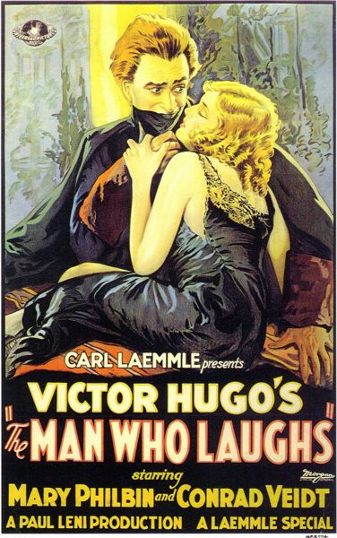

The Man Who Laughs

Starring: Conrad Veidt, Mary Philbin, Brandon Hurst
Director: Paul Leni
Writer: J. Grubb Alexander, Walter Anthony, Charles E. Whittaker
Producer: Carl Laemmle
The Man Who Laughs is a 1928 American silent romantic drama film directed by the German Expressionist filmmaker Paul Leni. The film is an adaptation of Victor Hugo's 1869 novel of the same name, and stars Mary Philbin as the blind Dea and Conrad Veidt as Gwynplaine. The film is known for the grim carnival "freak-like" grin on the character Gwynplaine's face, which often leads it to be classified as a horror film.
Watch Online: Internet Archive
Trivia
- Based on The Man Who Laughs (novel by Victor Hugo).
- Following the success of Universal Pictures's 1923 adaptation of Victor Hugo's The Hunchback of Notre-Dame, the company was eager to release another film starring Lon Chaney.
- A treatment adapting The Phantom of the Opera was prepared, but rejected by the Universal executives.
- In its place, Chaney was offered the lead in a film version of Hugo's The Man Who Laughs, to be produced under its French title (L'Homme Qui Rit) out of perceived similarity to Les Misérables.
Previous Showings
1 Run • 1 Festival
All runs on record (1):
- September 12, 2001Summer 2001